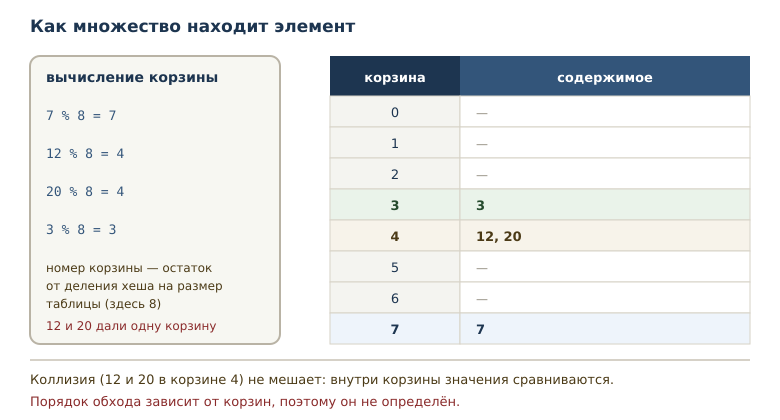
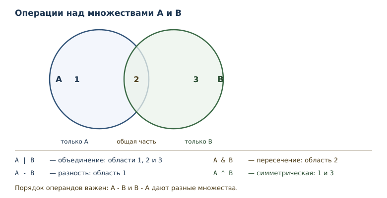

Множества и хеширование
Уникальность, операции над множествами и требования к хешируемым объектам.
В этой главе
Списки, кортежи и строки хранят элементы в порядке и допускают повторы. Но часто задача другая: узнать, встречалось ли значение раньше, и не хранить дубликаты. Список посетителей, набор тегов, список городов — здесь важен не порядок, а сам факт наличия. Для таких задач Python предлагает множество.
16.1 Зачем нужны множества
Представьте, что программа читает журнал посещений и должна посчитать, сколько уникальных пользователей заходило за день. Если хранить записи списком, придётся для каждой новой записи просматривать весь список и проверять, нет ли её там. Чем больше данных, тем медленнее проверка.
Множество решает обе задачи сразу: оно не хранит дубликаты, поэтому количество элементов равно количеству уникальных значений, а проверка вхождения выполняется быстро. Множество — изменяемая неупорядоченная коллекция уникальных хешируемых элементов. Все четыре слова в определении важны: изменяемая, неупорядоченная, уникальная, хешируемая.
После этой главы вы сможете:
- создавать множества и понимать, почему в них нет повторов;
- объяснять, что такое хеширование и какие объекты хешируемы;
- выполнять объединение, пересечение и разность;
- выбирать между множеством и списком по задаче;
- использовать
frozenset, когда нужна неизменяемость.
16.2 Создание множества
Множество записывается фигурными скобками с элементами через запятую.
letters = {"a", "b", "c", "b"}
print(len(letters))
print("a" in letters)
print("z" in letters)
print(type(letters).__name__)
3
True
False
set
В литерале было четыре значения, но b повторилось, и в множестве
осталось три элемента. Повтор не ошибка: множество просто не хранит
копии. Проверка вхождения отвечает на вопрос о наличии значения.
Пустое множество нельзя записать как {}: эта запись создаёт пустой
словарь, который появится в следующей главе. Для пустого множества
используется функция set().
empty = set()
print(len(empty))
print(type(empty).__name__)
print(type({}).__name__)
0
set
dict
Множество можно построить из любого итерируемого объекта — так удобно убирать повторы и преобразовывать значения.
values = set(range(5))
print(len(values))
print(sorted(values))
print(3 in values)
5
[0, 1, 2, 3, 4]
True
Обратите внимание на sorted: множество неупорядоченно, поэтому
печатать его напрямую рискованно — порядок вывода не определён и не
обязан совпадать между запусками и версиями. Функция sorted возвращает
список в понятном порядке, и такой вывод уже можно показывать.
Преобразование из списка — обычный способ получить множество
уникальных значений. При этом исходный список не меняется: создаётся
новый объект другого типа. Если после уникализации нужен именно список,
делают обратное преобразование list(...) или sorted(...).
16.3 Хеширование
Как множество узнаёт, что элемент уже есть, не перебирая все элементы? Оно использует хеширование — вычисление целого числа (хеша) по объекту. Хеш позволяет быстро проверять равенство и искать элемент: вместо просмотра всех значений множество вычисляет хеш и обращается в нужное место хранилища.
print(hash(42))
print(hash((1, 2)) == hash((1, 2)))
print(hash(42) == hash(42.0))
42
True
True
Для целых чисел хеш обычно совпадает со значением, но есть исключение:
hash(-1) == -2, потому что -1 в CPython зарезервирован как признак
ошибки. На конкретное значение хеша в коде опираться не стоит. Равные
объекты обязаны иметь равные хеши — это требование языка, а не случайность: 42 и 42.0
считаются равными при сравнении, поэтому их хеши тоже равны. Обратное
неверно: одинаковый хеш не гарантирует равенство, такое совпадение
называют коллизией, и она разрешается сравнением значений.

Порядок обхода множества зависит от внутреннего расположения элементов, поэтому он не определён. Это плата за скорость: множество не обязано помнить, в каком порядке вы добавляли значения.
Схема на рисунке учебная: в ней восемь корзин и номер вычисляется как остаток от деления на восемь. Настоящая таблица множества устроена сложнее — она растёт при заполнении и меняет размер, — но принцип тот же: хеш указывает, где искать, а равенство подтверждает находку. Для программиста важны следствия: проверка вхождения быстрая, а порядок обхода не определён.
Равенство и хеш
Связь между равенством и хешем — требование языка: если два объекта
равны, их хеши обязаны совпадать. Поэтому 1 и 1.0 считаются одним
элементом множества, хотя это значения разных типов.
print({1, 2} == {2, 1})
print(1 == 1.0)
print(hash(1) == hash(1.0))
print(len({1, 1.0}))
True
True
True
1
Порядок записи не влияет на равенство множеств: сравнивается состав, а не последовательность. Единица и единица с плавающей точкой равны, их хеши равны, поэтому в множестве остаётся один элемент. Если бы хеши различались, множество не смогло бы найти значение, которое в нём есть.
16.4 Хешируемость
Хешируемость — свойство объекта иметь неизменяемый хеш и участвовать в множествах и ключах словарей. Хеш должен оставаться одним и тем же, пока объект жив; иначе множество не смогло бы найти элемент, который уже внутри.
Отсюда правило: изменяемые встроенные коллекции — list, dict, set,
bytearray — не хешируемы. Список нельзя положить в множество, потому что
его содержимое может измениться и хеш перестанет соответствовать
сохранённому. Это не значит, что нехешируем любой изменяемый объект:
пользовательский класс без собственных __eq__ и __hash__ получает хеш по
идентичности и остаётся хешируемым.
numbers = {1, 2, 3}
numbers.add([4, 5])
TypeError: cannot use 'list' as a set element (unhashable type: 'list')
Кортеж хешируем, если хешируемы все его элементы. Кортеж из чисел — да; кортеж со списком внутри — нет, потому что список изменяем. Строки хешируемы, числа тоже.
Важно различать хешируемость и равенство: два разных объекта могут быть равны и обязаны иметь одинаковый хеш, но два объекта с одинаковым хешем не обязаны быть равны.
16.5 Операции над множествами
Операция над множествами — объединение, пересечение, разность и
симметрическая разность: |, &, -, ^. Они работают по правилам
теории множеств.
a = {1, 2, 3}
b = {3, 4, 5}
print(sorted(a | b))
print(sorted(a & b))
print(sorted(a - b))
print(sorted(b - a))
print(sorted(a ^ b))
[1, 2, 3, 4, 5]
[3]
[1, 2]
[4, 5]
[1, 2, 4, 5]
Разберём каждую операцию. Объединение a | b содержит элементы обоих
множеств. Пересечение a & b — только общие. Разность a - b — то, что
есть в a, но отсутствует в b; порядок операндов важен, поэтому
b - a даёт другой результат. Симметрическая разность a ^ b содержит
элементы, которые есть ровно в одном из множеств, то есть всё, кроме
общих.

Те же операции доступны методами, и это удобнее, когда слева не множество, а любой итерируемый объект.
a = {1, 2, 3}
b = {3, 4, 5}
print(sorted(a.union(b)))
print(sorted(a.intersection(b)))
print(sorted(a.difference(b)))
print(sorted(a.symmetric_difference(b)))
[1, 2, 3, 4, 5]
[3]
[1, 2]
[1, 2, 4, 5]
Операции не меняют исходные множества, а возвращают новое. Для
изменения на месте у методов есть варианты update, intersection_update
и другие; их удобно использовать, когда исходные данные больше не нужны.
Полезны и отношения между множествами: включение и непересекаемость.
print({1, 2} <= {1, 2, 3})
print({1, 2} < {1, 2, 3})
print({1, 2, 3} <= {1, 2})
print({1, 2}.isdisjoint({3, 4}))
True
True
False
True
<= означает «подмножество или равно», < — «строгое подмножество»
(меньше и не равно). isdisjoint возвращает True, если общих элементов
нет.
16.6 Изменение множества
Множество изменяемо: элементы можно добавлять и удалять. Но заменить элемент по индексу нельзя — индексов у множества нет.
values = {1, 2, 3}
values.add(4)
print(sorted(values))
values.discard(2)
values.discard(99)
print(sorted(values))
values.remove(1)
print(sorted(values))
[1, 2, 3, 4]
[1, 3, 4]
[3, 4]
Метод add добавляет один элемент. discard удаляет элемент, если он
есть, и ничего не делает, если его нет; remove в таком случае поднимает
KeyError.
values = {1, 2, 3}
values.remove(99)
KeyError: 99
Выбор между remove и discard — вопрос намерения: если отсутствие
элемента означает ошибку, нужен remove; если это нормальная ситуация —
discard.
Для массовых изменений есть варианты методов «на месте». Они меняют
множество и возвращают None — то же правило, что у методов списка.
a = {1, 2, 3}
a.update({3, 4, 5})
print(sorted(a))
a.difference_update({1, 2})
print(sorted(a))
[1, 2, 3, 4, 5]
[3, 4, 5]
update добавляет все элементы переданного набора, difference_update
удаляет их. Оба метода меняют a на месте, поэтому сохранять результат
в новое имя не нужно: он равен None.
Обращение по индексу для множества невозможно.
values = {1, 2, 3}
print(values[0])
TypeError: 'set' object is not subscriptable
Сообщение говорит, что множество не поддерживает индексацию. Чтобы получить элемент, множество либо проверяют на вхождение, либо преобразуют в список или сортируют.
16.7 Порядок обхода
Неупорядоченность — не мелкая деталь, а свойство, на которое нельзя опираться. Порядок элементов множества не определён, и код не должен от него зависеть.
values = {"яблоко", "банан", "груша"}
print(sorted(values))
print(len(values))
['банан', 'груша', 'яблоко']
3
Если нужен стабильный порядок, данные сортируют или хранят в списке. Множество отвечает на вопросы «есть ли» и «сколько уникальных», а не «что идёт первым».
16.8 frozenset
Иногда нужна неизменяемая версия множества. frozenset — неизменяемое множество; оно может быть элементом другого множества или ключом словаря, потому что его хеш не меняется.
fs = frozenset({1, 2})
print(len(fs))
print(1 in fs)
print(type(fs).__name__)
sets = {fs, frozenset({3})}
print(len(sets))
print(fs in sets)
2
True
frozenset
2
True
Внутрь множества sets попали два frozenset: обычное множество там
оказалось бы нехешируемым. Методы добавления у frozenset отсутствуют,
поэтому его безопасно хранить и передавать.
16.9 Сравнение со списком
Множество и список решают разные задачи. Список хранит порядок и допускает повторы; множество хранит уникальность и быстро отвечает на вопрос о вхождении. Если значения должны менять порядок, множество не подходит; если нужен только факт наличия, множество удобнее.
Распространённый приём — преобразовать список в множество, чтобы убрать повторы, а затем вернуться к списку.
words = ["кот", "пёс", "кот", "кот", "пёс"]
unique = set(words)
print(len(unique))
print(sorted(unique))
2
['кот', 'пёс']
Два шага — set для уникальности и sorted для порядка — покрывают
большинство задач «оставить только уникальные значения и показать их».
Ещё одно различие проявляется в проверке вхождения. Для списка Python просматривает элементы по очереди, пока не найдёт совпадение, поэтому время проверки растёт с длиной списка. Множество вычисляет хеш и обращается к нужной корзине, поэтому в среднем проверка занимает одинаковое время при любом размере. На малых данных разница незаметна, на больших она определяет выбор структуры.
Плата за это — память на служебные структуры и потеря порядка. Поэтому множество выбирают, когда важны уникальность и быстрая проверка вхождения, а не когда нужен аккуратный порядок элементов.
16.10 Практика: общие слова
Вернёмся к задаче из начала главы, но с двумя наборами данных. Преобразование списка слов в множество и операции над множествами дают ответ в две строки.
first = set("яблоко банан киви".split())
second = set("банан груша киви".split())
print(sorted(first & second))
print(sorted(first - second))
print(sorted(first | second))
['банан', 'киви']
['яблоко']
['банан', 'груша', 'киви', 'яблоко']
Общие слова нашлись пересечением, слова только из первого набора — разностью, полный словарь — объединением. Без множеств пришлось бы для каждого слова перебирать другой набор.
16.11 Когда множество не подходит
Множество — не замена списку. Есть три ситуации, где оно вредит.
Первая: важен порядок. Если данные нужно показывать в порядке поступления или сортировать по нескольким полям, множество порядок теряет.
Вторая: нужны повторы. Если каждая запись значима сама по себе — например, история операций, — дубликаты нельзя выбрасывать.
Третья: элементы не хешируемы. Списки и словари внутрь множества не положить, и преобразование не поможет.
В остальных случаях множество делает код короче и понятнее: проверка вхождения читается как вопрос, а операции над наборами — как намерение.
16.12 Типичные ошибки
Писать {} для пустого множества. Это пустой словарь. Нужен set().
Ждать порядка. Порядок элементов множества не определён, поэтому нельзя рассчитывать на «первый элемент» и нельзя индексировать.
Класть в множество список. Список не хешируем; поднимается
TypeError. Используйте кортеж или frozenset.
Путать remove и discard. remove поднимает KeyError, если
элемента нет; discard молча пропускает.
Менять множество во время перебора. Изменение размера множества
(добавление нового элемента или удаление существующего) внутри цикла for
приводит к ошибке RuntimeError: Set changed size during iteration.
Добавление уже имеющегося элемента или удаление отсутствующего размер не
меняет и ошибки не вызывает, но полагаться на это не стоит. Соберите
изменения и примените их после цикла.
Ожидать, что повторные значения сохранятся. Дубликаты исчезают молча — это и есть смысл множества.
16.13 Упражнения
1. Уникальность
Дан набор {10, 20, 20, 30}. Определите, не запуская код: длину
множества, результат проверки 20 in values и 40 in values. Проверьте
ответы программой.
2. Убрать повторы
Для набора {1, 2, 2, 3, 3, 3} выведите количество элементов и
отсортированный список значений. Объясните, куда делись повторы.
3. Пересечение и объединение
Для a = {1, 2, 3, 4} и b = {3, 4, 5, 6} найдите пересечение и
объединение, выводя результат в отсортированном виде.
4. Разности
Для тех же множеств найдите a - b, b - a и симметрическую разность.
Объясните, почему a - b и b - a различаются.
5. Отношения множеств
Проверьте три утверждения: {1, 2} — подмножество {1, 2, 3};
{1, 2, 3} — подмножество самого себя; {1, 2, 3} — подмножество
{1, 2}. Объясните, чем <=
отличается от <.
6. Изменение множества
Добавьте в множество {1, 2, 3} элемент 4, удалите 2, затем попробуйте
удалить 99 через discard. Выведите результат после каждого шага.
Почему discard не поднимает ошибку?
7. Проверка вхождения
Напишите фрагмент, который проверяет, есть ли значение 2 в множестве
{1, 2, 3}, и выводит «есть» или «нет». Объясните, что вернёт проверка
для отсутствующего значения.
8. Уникальные слова
Дан список слов ["кот", "пёс", "кот", "кот", "пёс"]. Получите
множество слов, выведите количество уникальных слов и их отсортированный
список. Объясните, почему количество равно двум.
9. Хешируемые элементы
Попробуйте добавить в множество список и объясните ошибку. Затем
создайте frozenset из двух элементов, проверьте его длину, вхождение и
отношение к frozenset({1, 2, 3}). Объясните, почему обычное множество
нельзя положить в множество, а frozenset можно.
10. Мини-задача: уникальные слова текста
Напишите функцию unique_words(text), которая возвращает
отсортированный список уникальных слов строки. Проверьте на
"раз два раз три два". Объясните, какие операции понадобились.
16.14 Проверка понимания
- Чем множество отличается от списка по порядку, повторам и изменяемости?
- Что такое хеширование и зачем оно нужно множеству?
- Какие объекты хешируемы и почему список — нет?
- Чем
removeотличается отdiscard? - Что произойдёт при попытке взять
values[0]у множества и почему? - Чем
frozensetотличается от обычного множества? - Почему порядок элементов множества нельзя считать определённым?
16.15 Что дальше
Множества и хеширование открывают дорогу к структуре, которая хранит данные парами «ключ — значение»: словарю. Хеширование там работает так же, но вместо флага наличия хранится связанное значение. Об этом — в главе «Словари: отображения и структурирование данных».